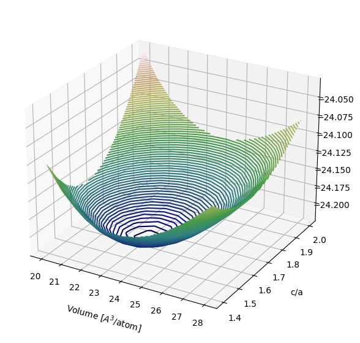

Magnesium#
import profess
import ase_tools
import matplotlib.pyplot as plt
import numpy as np
import scipy.optimize
import spglib
Simplfied energy landscape#
At ambient pressure, magnesium crystallizes in the hexagonal close-packed (HCP) structure.
We begin by plotting the energy of HCP Mg for a range of volumes and c/a ratios.
volumes = np.linspace(20,28,12)
c_a_ratios = np.linspace(1.4,2,12)
energies = np.empty([volumes.size, c_a_ratios.size])
for i, vol_per_atom in enumerate(volumes):
for j, c_a_ratio in enumerate(c_a_ratios):
# generate lattice constant, cell vectors, and ion positions
a = ((2*vol_per_atom) / (np.sqrt(3)/2*c_a_ratio))**(1/3)
cell_vectors = np.array([[ a, 0, 0],
[-a/2, np.sqrt(3)/2*a, 0],
[ 0, 0, c_a_ratio*a]])
frac_coords = np.array([[ 0, 0, 0],
[2/3, 1/3, 1/2]])
xyz_coords = (cell_vectors.T).dot(frac_coords.T).T
# create a profess system
energy_cutoff = 600
system = (
profess.System.create(cell_vectors, energy_cutoff, ['a','ev'])
.add_ions('potentials/mg.gga.recpot', xyz_coords, 'a')
.add_electrons()
.add_wang_teter_functional()
.add_hartree_functional()
.add_perdew_burke_ernzerhof_functional()
.add_ion_electron_functional()
.add_ion_ion_interaction()
)
# compute the energy per atom
energies[i,j] = system.minimize_energy().energy('ev')/2
fig = plt.figure(figsize=(10,7))
ax = plt.axes(projection='3d')
x, y = np.meshgrid(volumes, c_a_ratios, sparse=False, indexing='ij')
ax.contour3D(x, y, energies, 80, cmap='gist_earth', zorder=1)
ax.set_xlabel('Volume [$A^3$/atom]', labelpad=10)
ax.set_ylabel('c/a', labelpad=10)
ax.set_zlabel('Energy [eV/atom]', labelpad=15);
ax.view_init(25, 300)

Structure optimization#
To find the optimal volume and c/a ratio, we relax the geometry, eliminating forces on ions and/or stress on the unit cell.
ase_tools.minimize_forces_stress(system, 'BFGSLineSearch', 1e-4);
vol_per_atom = system.volume('a3')/2
# standarize the relaxed lattice to extract c/a ratio (uses spglib)
cell_vectors = np.array(system.box_vectors('a'))
xyz_coords = np.array(system.ions_xyz_coords('a'))
frac_coords = np.linalg.inv(cell_vectors.T).dot(xyz_coords.T).T
standardized_cell, _, _ = spglib.standardize_cell((cell_vectors,frac_coords,(1,1)))
c_a_ratio = standardized_cell[2,2] / standardized_cell[0,0]
print('\n')
print('Relaxed volume per atom: {:5.2f} A3'.format(vol_per_atom))
print('Relaxed c/a: {:5.2f}'.format(c_a_ratio))
x = vol_per_atom*np.ones(10)
y = c_a_ratio*np.ones(10)
ax.plot(x, y, np.linspace(energies.min(),energies.max(),10), color='red', linewidth=2, label='optimal', zorder=2)
ax.legend(loc='upper left')
fig
Step[ FC] Time Energy fmax
BFGSLineSearch: 0[ 0] 09:55:16 -1.769792 0.0884
BFGSLineSearch: 1[ 4] 09:55:18 -1.777926 0.0316
BFGSLineSearch: 2[ 6] 09:55:19 -1.778383 0.0420
BFGSLineSearch: 3[ 8] 09:55:20 -1.780262 0.0055
BFGSLineSearch: 4[ 9] 09:55:21 -1.780307 0.0009
BFGSLineSearch: 5[ 10] 09:55:21 -1.780308 0.0003
BFGSLineSearch: 6[ 12] 09:55:22 -1.780308 0.0000
Relaxed volume per atom: 23.05 A3
Relaxed c/a: 1.63
Alternate approach#
To illustrate another strategy, we reproduce the previous result by reformulating the task as an abstract optimization problem, which we then solve with a simplex algorithm from scipy.
# initial guess for the volume and c/a
x0 = (24, 1.7)
# objective function
def energy_per_atom(x):
vol_per_atom, c_over_a = x
# generate lattice constant, cell vectors, and ion positions
a = ((2*vol_per_atom) / (np.sqrt(3)/2*c_a_ratio))**(1/3)
cell_vectors = np.array([[ a, 0, 0],
[-a/2, np.sqrt(3)/2*a, 0],
[ 0, 0, c_over_a*a]])
frac_coords = np.array([[ 0, 0, 0],
[2/3, 1/3, 1/2]])
xyz_coords = (cell_vectors.T).dot(frac_coords.T).T
# create a profess system
energy_cutoff = 600
system = (
profess.System.create(cell_vectors, energy_cutoff, ['a','ev'])
.add_ions('potentials/mg.gga.recpot', xyz_coords, 'a')
.add_electrons()
.add_wang_teter_functional()
.add_hartree_functional()
.add_perdew_burke_ernzerhof_functional()
.add_ion_electron_functional()
.add_ion_ion_interaction()
)
# return the energy per atom
return system.minimize_energy().energy('ev')/2
# solve with scipy's Nelder-Mead simplex algorithm
result = scipy.optimize.minimize(energy_per_atom, x0, method='Nelder-Mead')
print('Relaxed volume per atom: {:5.2f} A3'.format(result.x[0]))
print('Relaxed c/a: {:5.2f}'.format(result.x[1]))
Relaxed volume per atom: 23.05 A3
Relaxed c/a: 1.63